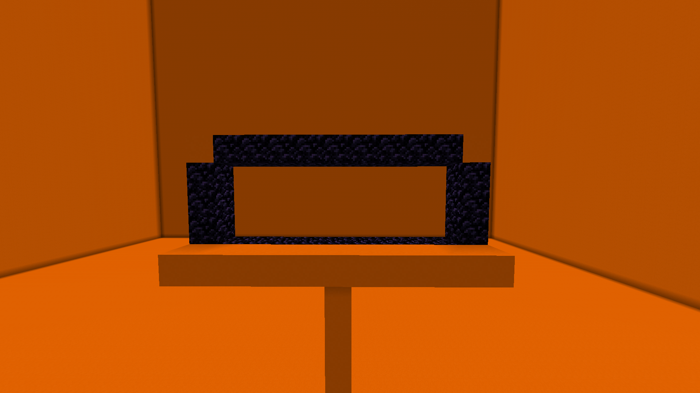
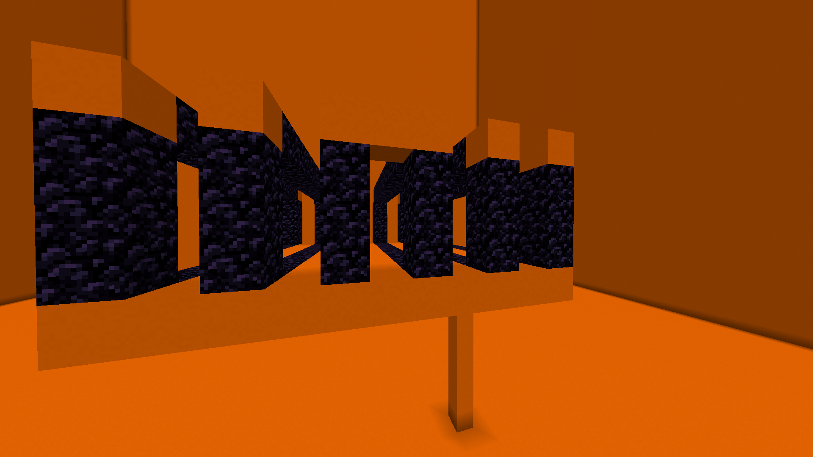
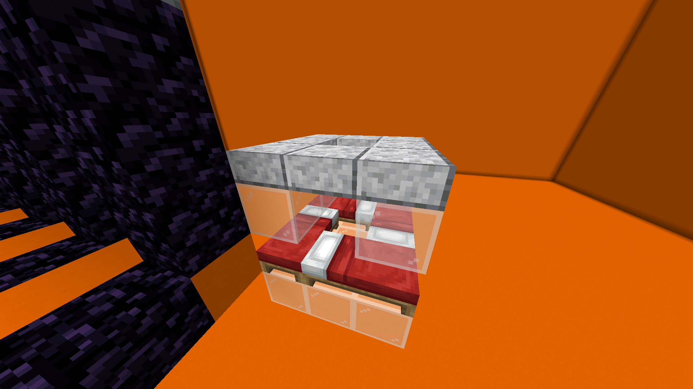
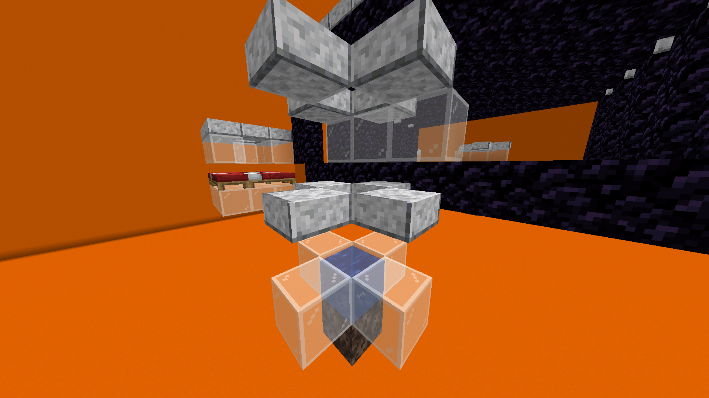
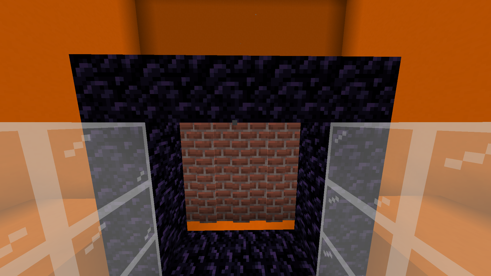
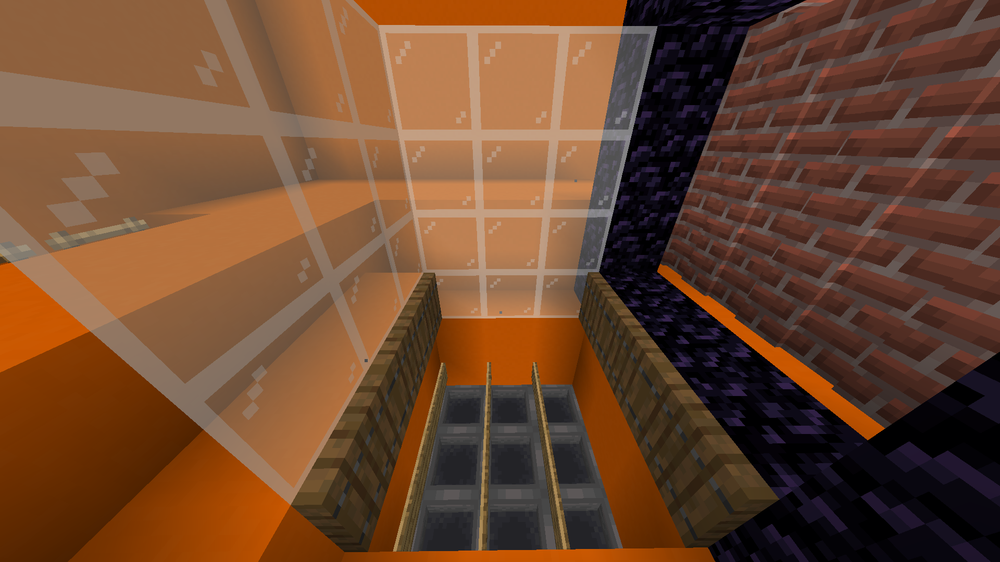

Farm uses the Nether to teleport the golems into their killing chamber.
It uses a lot of obsidian, so the farm is intended for the middle of the gameplay.
It needs 12 villagers and 2 zombies.
The iron farm produces 1,800 ingots per hour.
Step 1
Build a tower 9 blocks high on top of it. Construct a 9-long and 3-high block Nether portal.

Step 2
Construct another 5 portals next to it with a 1-block gap between one another.

Step 3
Now, build a villager cell.
One block below the portal diagonally, make a 3x3 glass platform.
On top of it, place four beds, leaving the center block free.
On top of these beds, place another ring of glass, but leave the center edge block facing the inside of the portal empty.
Then, make a ring of slabs above the glass.

Step 4
Copy the villager cell onto the other corners.
Remember to have the open space facing the inside of the portals.
Step 5
Zombie cell:
2 blocks from the center of the portal and 4 blocks down, place soul sand. On top of it, add water.
On each side of the water, place glass.
One block above the glasses, place slabs, and one block above them, add another 4 slabs.
Place 3 glass blocks between 2 slabs in front of the portal.

Step 6
Copy the zombie cell to the other side.
place a row of slabs on each portal.
light all the portals
Step 7
In the Nether, expand the portal to 3x3.
Place a wall of walls behind it.

Step 8
Copy the killing chamber just like in the picture.

Step 9
The hopper should be connected to their rows to the double chest.
Make a little room for access to the chest with ladders to the surface.
Light the portal and go to the overworld.
Step 10
Place the zombies and the villager in their respective positions, and cover the opening at the top of each cell with a solid block and a slab; a slab, respectively.
zombie: block,slab
villagers: slab